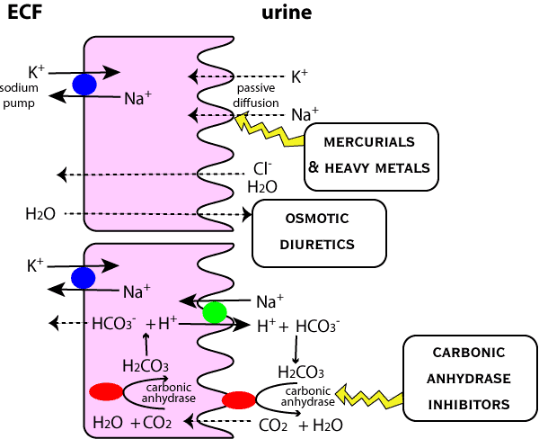

Diuretics acting in the proximal convoluted tubule

Sites of action.
Not much used except for glaucoma (eye notes) because of low efficacy as a diuretic. Acetazolamide is the only one in common use, although newer drugs are available.
These drugs are filtered through the glomerulus, have limited tubular resorption
and are pharmacologically inert. Mannitol is the only drug
commonly used, although occasionally glycerol (glycerin) is
given by mouth. Glucose can be used in anuric or oliguric renal failure to try
and establish urine production as it is metabolised if not excreted.
They are freely filtered at the glomerulus and poorly reabsorbed from the tubule
causing an increase in osmotic pressure in the tubule and preventing the reabsorption
of water. As well as water, there is an increase in sodium, other electrolytes,
uric acid and urea secretions due to decreased bulk flow resorption. They may
increase renal blood flow and glomerular filtration by causing renal arteriole
dilation, decreased vascular resistance and decreased blood viscosity . Because
mannitol is not metabolised its use in oliguric renal faliure should be confined
to one dose only unless diuresis is achieved.
They are used in cerebral oedema and glaucoma, and are contra-indicated in heart
disease - colloids raise venous pressure. Mannitol will cause sloughing if given
perivascularly.
Obselete - do not use. You may come across heavy metal poisoning causing renal problems.
back to diuretics
| 6 Cardiovascular index |
| |
copyright
Massey University
|